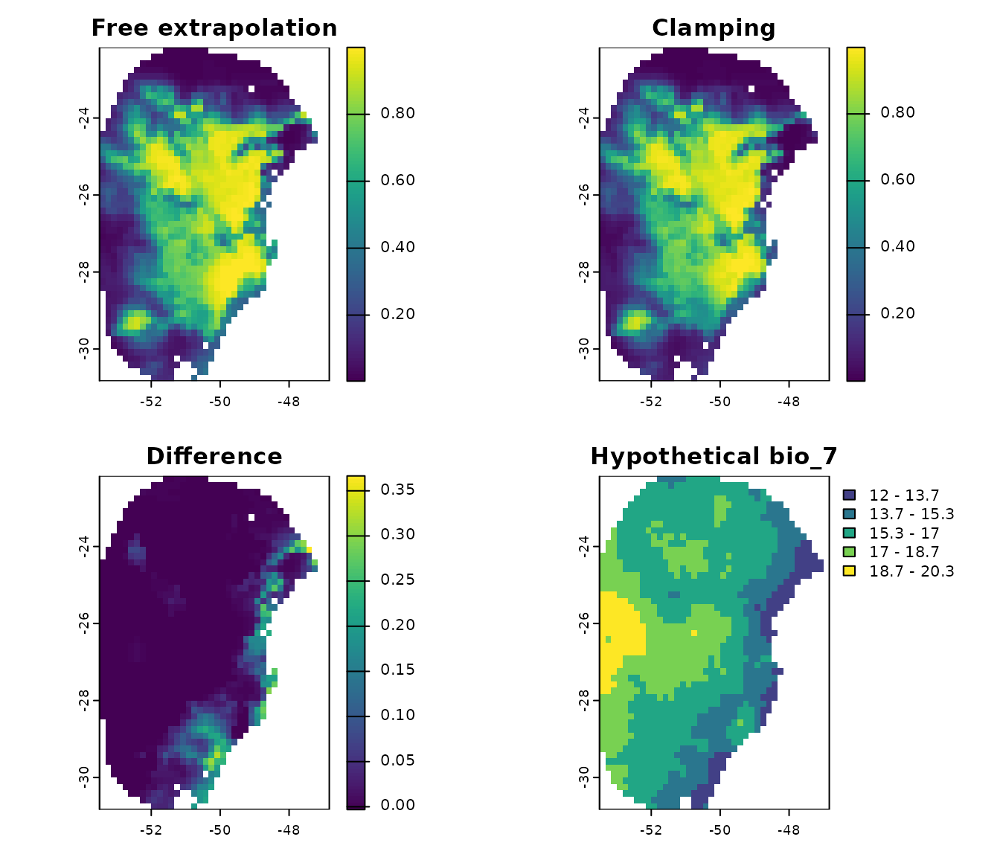

Predict models to single scenario
model_predictions.RmdIntroduction
Once selected models have been fit using fit_selected(),
projections to single or multiple scenarios can be performed. The
predict_selected() function is designed for projections to
single scenarios.
To predict using the selected models, a fitted_models
object is required. For detailed information on model fitting, please
consult the vignette Fit and Explore
Selected Models. The fitted_models object generated in
that vignette is included as an example dataset within the package.
Let’s load it.
#Load packages
library(kuenm2)
library(terra)
#> terra 1.8.54
#Import calib_results_maxnet
data("fitted_model_maxnet", package = "kuenm2")
#Print calibration result
fitted_model_maxnet
#> fitted_models object summary
#> ============================
#> Species: Myrcia hatschbachii
#> Algortihm: maxnet
#> Number of fitted models: 2
#> Models fitted with 4 replicatesTo compare the results, let’s import a fitted_models
object generated using the GLM algorithm:
#Import calib_results_maxnet
data("fitted_model_glm", package = "kuenm2")
#Print calibration result
fitted_model_glm
#> fitted_models object summary
#> ============================
#> Species: Myrcia hatschbachii
#> Algortihm: glm
#> Number of fitted models: 1
#> Models fitted with 4 replicatesPredict Selected Models for a Single Scenario
To predict selected models for a single scenario, you need a
fitted_models object and the corresponding predictor
variables. These predictor variables can be provided as either a
SpatRaster or a data.frame. The names of the
variables (or columns in the data.frame) must precisely
match those used for model calibration or those used when running PCA
(if do_pca = TRUE was set in the
prepare_data() function; see Prepare Data for Model Calibration for more
details).
Predict to SpatRaster
Let’s use the same raster variables that were used to prepare the data and calibrate the models. These are included as example data within the package:
# Import raster layers
var <- rast(system.file("extdata", "Current_variables.tif", package = "kuenm2"))
#Plot raster layers
plot(var)
Let’s check which variables were used to calibrate our models. They
are available in the calibration_data element of the
object:
# Variables used to calibrate maxnet models
colnames(fitted_model_maxnet$calibration_data)
#> [1] "pr_bg" "bio_1" "bio_7" "bio_12" "bio_15" "SoilType"
#Variables used to calibrate glm models
colnames(fitted_model_glm$calibration_data)
#> [1] "pr_bg" "bio_1" "bio_7" "bio_12" "bio_15" "SoilType"The first column, “pr_bg”, indicates the presence (1) and absence (0)
records, while the other columns represent the environmental variables.
In this case, the variables are bio_1, bio_7,
bio_12, bio_15, and SoilType. All
these variables are present in the SpatRaster
(var) we imported. Therefore, we can now predict our models
to this raster. Let’s begin by predicting the maxnet model:
p_maxnet <- predict_selected(models = fitted_model_maxnet,
raster_variables = var,
progress_bar = FALSE)By default, the function computes consensus metrics (mean, median,
range, and standard deviation) for each model across its replicates (if
more than one model was selected), as well as a general consensus across
all models. In this case, the output is a list containing
SpatRaster predictions for each replicate, along with the
consensus results for each model and the overall general consensus:
#See objects in the output of predict_selected
names(p_maxnet)
#> [1] "Model_159" "Model_189" "General_consensus"Let’s plot the general consensus:
plot(p_maxnet$General_consensus)
We can also plot the results for each replicate and the consensus for each model:
#Predictions for each replicate from model 159
plot(p_maxnet$Model_159$Replicates)
#Consensus across each replicate from model 159
plot(p_maxnet$Model_159$Model_consensus)
For comparison, let’s predict the GLM model:
# Predict glm model
p_glm <- predict_selected(models = fitted_model_glm,
raster_variables = var,
progress_bar = FALSE)
#See selected models that were predicted
names(p_glm)
#> [1] "Model_86" "General_consensus"
#Compare general consensus (mean) between maxnet and glm
par(mfrow= c(1, 2)) #Set grid to plot
plot(p_maxnet$General_consensus$mean, main = "Maxnet")
plot(p_glm$General_consensus$mean, main = "GLM")
on.exit() #Reinitiate gridPredict to data.frame
Instead of a SpatRaster, we can also predict the models
to a data.frame that stores the variable values. To see an
example, let’s convert the raster variables var to a
data.frame:
var_df <- as.data.frame(var)
head(var_df)
#> bio_1 bio_7 bio_12 bio_15 SoilType
#> 11 22.77717 18.12400 1180 48.03594 NA
#> 12 22.76711 17.74400 1191 49.31194 10
#> 13 22.68580 17.46575 1206 51.51922 10
#> 14 22.50121 17.84525 1228 53.90265 10
#> 15 22.07609 18.14125 1254 54.10397 10
#> 16 21.88485 18.80800 1276 54.07279 10Note that each column stores the values for each variable. Let’s
predict our Maxnet models to this data.frame:
p_df <- predict_selected(models = fitted_model_maxnet,
raster_variables = var_df, #Now, a data.frame
progress_bar = FALSE) Now, instead of SpatRaster objects, the function returns
data.frame objects with the predictions:
#Results by replicate of the model 159
head(p_df$Model_159$Replicates)
#> Rep_1 Rep_2 Rep_3 Rep_4
#> 1 4.953374e-09 2.990750e-07 4.429839e-07 1.836235e-07
#> 2 6.387873e-09 3.707596e-07 5.490833e-07 2.281607e-07
#> 3 1.230260e-08 6.275917e-07 9.136320e-07 3.912725e-07
#> 4 3.233261e-08 1.323430e-06 1.844737e-06 8.476498e-07
#> 5 3.462922e-07 8.467052e-06 1.078599e-05 5.758022e-06
#> 6 7.178695e-07 1.464941e-05 1.791809e-05 1.020809e-05
#Consensus across replicates of the model 159
head(p_df$Model_159$Model_consensus)
#> median range mean stdev
#> 1 2.413492e-07 4.380305e-07 2.326589e-07 1.852044e-07
#> 2 2.994601e-07 5.426955e-07 2.885979e-07 2.294184e-07
#> 3 5.094321e-07 9.013294e-07 4.861997e-07 3.813484e-07
#> 4 1.085540e-06 1.812404e-06 1.012037e-06 7.696750e-07
#> 5 7.112537e-06 1.043969e-05 6.339338e-06 4.492749e-06
#> 6 1.242875e-05 1.720022e-05 1.087337e-05 7.471354e-06
#General consensus across all models
head(p_df$General_consensus)
#> median mean stdev range
#> 1 1.892740e-07 2.154842e-07 1.874738e-07 4.976784e-07
#> 2 2.418142e-07 2.764726e-07 2.408419e-07 6.614167e-07
#> 3 4.261519e-07 4.815362e-07 4.140724e-07 1.171038e-06
#> 4 9.560208e-07 1.040946e-06 8.638481e-07 2.514376e-06
#> 5 6.485619e-06 6.530262e-06 4.897458e-06 1.426154e-05
#> 6 1.188007e-05 1.162486e-05 8.369096e-06 2.486310e-05Binarize Models
The fitted_models object stores the thresholds that can
be used to binarize the models into suitable and unsuitable areas. These
thresholds correspond to the omission error rate used during model
selection (e.g., 5% or 10%).
You can access the omission error rate used to calculate the thresholds directly from the object:
#Get omission error used to select models and calculate the thesholds
## For maxnet model
fitted_model_maxnet$omission_rate
#> [1] 5
## For glm model
fitted_model_glm$omission_rate
#> [1] 5In both models, the omission error rate used to calculate the thresholds was 5%. This means that when the predictions are binarized, approximately 5% of the presence records used to calibrate the models will fall into cells classified as unsuitable.
The thresholds are summarized in two ways: the mean and median across replicates for each model, and the consensus mean and median across all selected models (when more than one model is selected). Let’s check the thresholds for the general consensus:
#For maxnet
fitted_model_maxnet$thresholds$consensus
#> $mean
#> [1] 0.315051
#>
#> $median
#> [1] 0.336047
#For glm
fitted_model_glm$thresholds$consensus
#> $mean
#> 4
#> 0.09240012
#>
#> $median
#> 4
#> 0.08753728Let’s use these thresholds to binarize the models (this functionality
is only available when predicting to a SpatRaster):
#Get the thersholds for models (general consensus)
thr_mean_maxnet <- fitted_model_maxnet$thresholds$consensus$mean #Maxnet
thr_mean_glm <- fitted_model_glm$thresholds$consensus$mean #glm
#Binarize models
mean_maxnet_bin <- (p_maxnet$General_consensus$mean > thr_mean_maxnet) * 1
mean_glm_bin <- (p_glm$General_consensus$mean > thr_mean_glm) * 1
#Compare results
par(mfrow= c(1, 2)) #Set grid to plot
plot(mean_maxnet_bin, main = "Maxnet")
plot(mean_glm_bin, main = "GLM")
on.exit() #Reinitiate gridClamping Variables
By default, predictions are performed with free extrapolation
(extrapolation_type = "E"). This can be problematic when
the peak of suitability occurs at the extremes of a predictor’s range.
For example, let’s examine the response curve of the Maxnet model for
bio_7 (Temperature Annual Range):
response_curve(models = fitted_model_maxnet, variable = "bio_7",
extrapolation_factor = 1)
Note that higher suitability occurs at low values of the temperature
range. However, the lower limit of the calibration data used to fit the
models (dashed line) is at 15.7ºC. The premise that suitability will
increase and stabilize at lower values of bio_7 is an
extrapolation of the model (the area to the left of the dashed line).
It’s possible that suitability could begin to decrease at extremely low
values, rendering this extrapolation inaccurate, but the calibration
data is insufficient for the model to predict this.
One way to address this is by clamping the variables. This means that
all values outside the calibration range (both below the lower value and
above the upper value) are set to the respective lower and upper limits
of the calibration range. For example, in the calibration data for the
Maxnet models, the lower and upper limits for bio_7 are
15.7ºC and 23.3ºC, respectively:
range(fitted_model_maxnet$calibration_data$bio_7)
#> [1] 15.71120 23.30475To observe the effect of clamping this variable, let’s create a
hypothetical (and extreme) scenario where bio_7 has
extremely low values:
#From bio_7, reduce values
new_bio7 <- var$bio_7 - 7
#Create new scenario
new_var <- var
#Replace bio_7 with new_bio7 in this scenario
new_var$bio_7 <- new_bio7
#Plot the differences
par(mfrow = c(1,2))
plot(var$bio_7, main = "Original bio_7")
plot(new_var$bio_7, main = "New bio_7")
on.exit() #Reinitiate gridLet’s predict the Maxnet models for this new scenario with both free
extrapolation (extrapolation_type = "E") and with clamped
variables (extrapolation_type = "EC"):
#Predict to hypothetical scenario with free extrapolation
p_free_extrapolation <- predict_selected(models = fitted_model_maxnet,
raster_variables = new_var, #New scenario
consensus = "mean",
extrapolation_type = "E", #Free extrapolation (Default)
progress_bar = FALSE)
#Predict to hypothetical scenario with clamping
p_clamping <- predict_selected(models = fitted_model_maxnet,
raster_variables = new_var, #New scenario
consensus = "mean",
extrapolation_type = "EC", #Extrapolation with clamping
progress_bar = FALSE)
#Get and see differences
p_difference <- p_free_extrapolation$General_consensus$mean - p_clamping$General_consensus$mean
#Plot the differences
par(mfrow = c(2,2))
plot(p_free_extrapolation$General_consensus$mean, main = "Free extrapolation",
zlim = c(0, 1))
plot(p_clamping$General_consensus$mean, main = "Clamping",
zlim = c(0, 1))
plot(p_difference, main = "Difference")
plot(new_bio7, main = "Hypothetical bio_7", type = "interval")
on.exit() #Reinitiate gridNote that when we clamp the variables, regions with extremely low
values of (the hypothetical) bio_7 exhibit lower predicted
suitabilities compared to when free extrapolation is allowed.
By default, when extrapolation_type = "EC" is set, all
predictor variables are clamped. You can specify which variables to
clamp using the var_to_clamp argument.
No Extrapolation
A more rigorous approach is to predict with no extrapolation, where regions outside the limits of the calibration data are assigned a suitability value of 0. Let’s predict the Maxnet models using the hypothetical scenario we created in the previous step to observe the difference:
#Predict to hypothetical scenario with no extrapolation
p_no_extrapolation <- predict_selected(models = fitted_model_maxnet,
raster_variables = new_var, #New scenario
consensus = "mean",
extrapolation_type = "NE", #No extrapolation
progress_bar = FALSE)
#Plot the differences
par(mfrow = c(2,2))
plot(p_free_extrapolation$General_consensus$mean, main = "Free extrapolation",
zlim = c(0, 1))
plot(p_clamping$General_consensus$mean, main = "Clamping",
zlim = c(0, 1))
plot(p_no_extrapolation$General_consensus$mean, main = "No extrapolation",
zlim = c(0, 1))
plot(new_bio7, main = "Hypothetical bio_7", type = "interval")
on.exit() #Reinitiate gridIn this example, almost the entire predicted area shows zero
suitability, except for a small patch. This occurred because, in this
hypothetical scenario, nearly the entire region has bio_7
values lower than those in the calibration data (which has a minimum of
15ºC). The only region where suitability is predicted to be greater than
0 is where the bio_7 values fall within the limits of the
calibration data.
By default, when extrapolation_type = "NE" is set, all
predictor variables are considered for this process. You can specify a
subset of variables to be considered for extrapolation using the
var_to_clamp argument.
Output Type
Maximum entropy models (maxnet) produce four different types of output for their predictions: raw, cumulative, logistic, and cloglog. These are described in Merow et al. 2013 and Phillips et al. 2017.
All four output types are monotonically related. Therefore, rank-based metrics for model fit (e.g., omission rate and partial ROC) will be identical. However, the output types have different scaling, which leads to distinct interpretations and visually different prediction maps.
- Raw (or exponential) output is interpreted as a Relative Occurrence Rate (ROR). The ROR sums to 1 when predicted to the calibration data.
- Cumulative output assigns to a location the sum of all raw values less than or equal to the raw value for that location, and then rescales this to range between 0 and 100. Cumulative output can be interpreted in terms of an omission rate because thresholding at a value of c to predict a suitable/unsuitable cell will omit approximately c% of presences.
- Cloglog output (Default) transforms the raw values into a scale of relative suitability ranging between 0 and 1, using a logistic transformation based on a user-specified parameter ‘’, which represents the probability of presence at ‘average’ presence locations. In this context, the tau value defaults to .
- Logistic output is similar to Cloglog, but it assumes that .
Let’s examine the differences between these four output types for Maxnet models:
p_cloglog <- predict_selected(models = fitted_model_maxnet, raster_variables = var,
type = "cloglog", progress_bar = FALSE)
p_logistic <- predict_selected(models = fitted_model_maxnet, raster_variables = var,
type = "logistic", progress_bar = FALSE)
p_cumulative <- predict_selected(models = fitted_model_maxnet, raster_variables = var,
type = "cumulative", progress_bar = FALSE)
p_raw <- predict_selected(models = fitted_model_maxnet, raster_variables = var,
type = "raw", progress_bar = FALSE)
#Plot the differences
par(mfrow = c(2,2))
plot(p_cloglog$General_consensus$mean, main = "Cloglog (Default)",
zlim = c(0, 1))
plot(p_logistic$General_consensus$mean, main = "Logistic",
zlim = c(0, 1))
plot(p_cumulative$General_consensus$mean, main = "Cumulative",
zlim = c(0, 1))
plot(p_raw$General_consensus$mean, main = "Raw",
zlim = c(0, 1))
on.exit() #Reinitiate gridSaving Predictions
We can save the predictions to the disk by setting
write_files = TRUE. When this option is enabled, you must
provide a directory path in the out_dir argument.
If raster_variables is a SpatRaster, the
function will save the output files as GeoTIFF (.tif) files. If
raster_variables is a data.frame, the function
will save the output files as Comma Separated Value (.csv) files.
p_save <- predict_selected(models = fitted_model_maxnet,
raster_variables = var,
write_files = TRUE, #To save to the disk
write_replicates = TRUE, #To save predictions for each replicate
out_dir = tempdir(), #A path to save the resuls (here, the temporary directory)
progress_bar = FALSE)